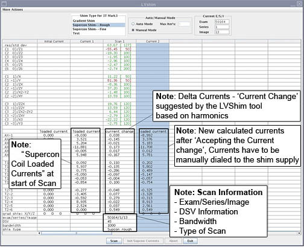
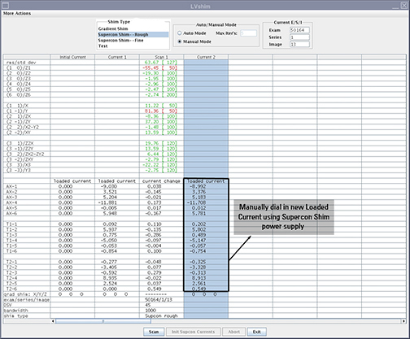
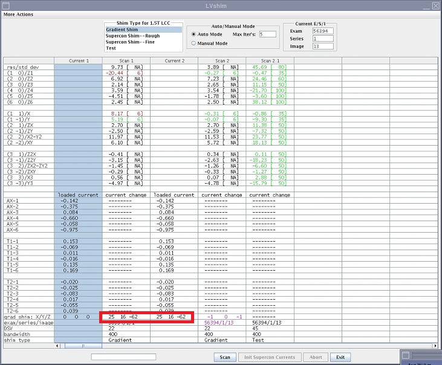
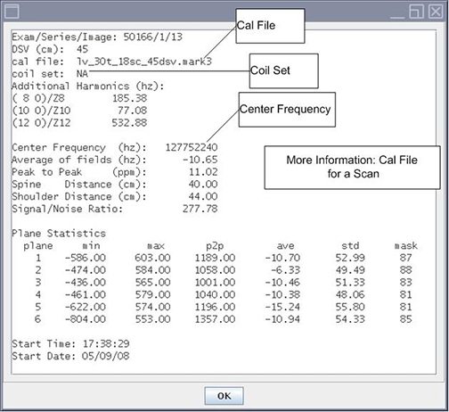

- 00000018WIA30238F20GYZ
- id_131064614.8
- Dec 26, 2022 2:46:55 AM
LVShim Procedures
Prerequisites
| Required persons | Preliminary requirements | Procedure | Finalization |
|---|---|---|---|
| 1 | Not Applicable | 4 hours | Not Applicable |
| Item | Quantity | Effectivity | Part number | Manufacturer |
|---|---|---|---|---|
| LVShim Phantom Assembly,for system running SV25.3 or earlier | 1 | - |
2298119 | - |
| Supercon Shim power supply, for system running SV25.3 or earlier | 1 | - | 452-62-2 | - |
| LVShim Phantom Inner Sphere | 1 | - | 2274476 | - |
| LV Phantom Small Half Assembly | 1 | - | 2306642 | - |
| LV Phantom Big Half Assembly | 1 | - | 2306645 | - |
| Universal Phantom Pad | 1 | - | 46-328383P1 | - |
| ||||
About this task
There are 3 different shimming procedures described in this document. There is also a Test Mode to reanlayze existing magnets.
LVSHIM-Rough (done at new site installations only):
-
The objective is to improve the homogeneity to a point where Grafidy and other calibrations can be performed. Use the three-piece LVShim phantom. The Rough Shim process is performed with the sampling diameter of 45-cm DSV and a higher bandwidth than Fine Shim and Gradient Shim.
-
Rough LVShim is normally needed at new sites that have never been shimmed before. If the site has previously been shimmed with LVShim, skip Rough LVShim and begin with Fine LVShim. For a new magnet installation, the magnet ATR shim currents are used for Rough LVShim.
LVSHIM- Fine
The objective is to further improve and tune the homogeneity as compared to LVSHIM-Rough. Use the three-piece LVShim phantom. The Fine shim process is performed with a sampling diameter of 45-cm DSV and a lower bandwidth than Rough Shim.
LVSHIM- Gradshim
The objective is to perform fine-tuning of the homogeneity of the magnet by using gradients only. The Gradshim process is performed with a sampling diameter of 22-cm DSV and the same bandwidth as Fine Shim depends on the quality (good/bad) of the fine tuning. Once the scan passes and all harmonics are in spec, the magnetic field is reanalyzed in Test mode automatically at 45DSV for customer acceptance.
LVSHIM-Test
The objective is to analyze scans at 45DSV without calculating currents. This mode performs scan and analyzes the scan in Test mode. Once the scan is complete it is analyzed in Test mode at 45DSV.
LVSHIM-Rough and Fine use the ‘Supercon shim power supply’ to dial correction currents into 18 supercon correction coils.
However, LVSHIM-Gradshim dials the correction currents into 3 (X/Y/Z) gradient correction coils.
Common to all Shimming Procedures
Procedure
- (For For R series magnet all configurations & RD series magnet with software version SV25.3 or earlier:) Set up LVShim procedure.
- Remove all coils from the cradle and phantoms from the bore.
- Set up and align the LVShim phantom.
Figure 1. Aligning the LVShim Phantom on Patient Table 
- Starting the LVShim Tool
- Proprietary mode: Insert the Restricted Service Key in the host
USB, if not already inserted.
-
Click the Service Browser .
-
Click the Calibration tab and select the Installation and Calibration wizard.
-
Select the appropriate shim (Gradient Shim, Supercon Shim-Rough, Supercon Shim-Fine) to be performed from the drop-down list. This will launch the LVShim tool.
-
- Non-Proprietary mode: On the Service Desktop, start the Service
Browser if not already running. Click the Calibration tab. Select LVShim from the calibration menu
and click Click here to start this tool. The
LVShim tool will launch.
Figure 3. Starting LVShim Tool in Service Browser 
Figure 4. Overview: Example of Shim Tool 
- Proprietary mode: Insert the Restricted Service Key in the host
USB, if not already inserted.
Rough LVShim and Fine LVShim Procedure
About this task
This procedure is needed for new sites that have never been shimmed.
Procedure
- After launching the LVShim tool, select Supercon Shim
- Rough.
Figure 5. LVShim Tool - User Interface 
- The LVShim tool scans at different bandwidth and analyzed at
45cm DSV.
- The bandwidth for Supercon Shim - Rough is 1000Hz (automatically selected).
- The bandwidth for Supercon Shim - Fine is 200Hz
Note:To change bandwidth, go to Expert Mode.
Figure 6. LVShim Tool User Interface 
General Rule for New Installs or Upgrades
About this task
Start with Rough LVShim.
Procedure
- Enter the original Florence currents in the Modify
Currents column one by one. Press Enteron the keyboard after each entry to move to the next line. After
you have modified the entire column, Click the Dial in Currents button.
Figure 7. Adding the Original Florence Currents  Note:
Note:The current values in the Illustration are only an example.
- On the LVShim user interface, click the Scan button. See Figure 8 below.
Figure 8. Starting Scan  Note:
Note:To abort, click the Abort button and press the Stop Scan button on the control panel.
- After the scan is complete, the tool calculates the harmonics
and compares it with the specs.
Figure 9. Harmonics and Spec Comparison 
-
Green cell = Passed Spec
-
Red Cell = Failed Spec
-
- The tool calculates the delta currents and the new currents
and displays currents in a pop-up window.
Figure 10. Previous, Delta, Next Currents 
- In the LVShim user interface, if ALL harmonics data cells are green, decline the new currents by clicking the Cancel button. LVShim calibration is now complete. Click Exit.
- In the LVShim user interface, if ANY harmonics
data cells are red, accept the new currents by clicking the Dial in Currents button on Dial in Currents window. The
new currents will be displayed in a new column in the LVShim user
interface as shown in illustration 10 below. Dial in the currents
from the new Loaded Current column using Supercon
Shim power supply. See Figure 11.
Repeat steps 4 -6 for Rough or Fine Shim until all harmonics are in spec.
Note:Refer to the Magnet documentation for wait times and procedures to dial in currents in the 18 Supercon Coils.
Note:You may have to go to scan desktop to perform manual prescan to catch center frequency while dialing in the currents.
Figure 11. Second Iteration of LVShim 
- Click the Exit button after ALL iterations
are complete and ALL the harmonics are in spec. If harmonics are not
in specs, Expert mode can be used. Expert Mode can be used to scan
with different parameters or reanalyze any image with different parameters.
Figure 12. Example of Supercon Shim - Fine  Note:
Note:You must peform the Gradify 3 Eddy Current Calibration before performing the Gradshim LVShim Procedure.
Gradshim LVShim Procedure
About this task
By default, Gradient Shim is performed in Auto Mode, though manual mode is also available.
Auto Mode
About this task


Procedure
- After completing the steps defined in Common to all Shimming Procedures select Gradient Shim.
- Click Scan. See Figure 14
- In Auto mode, the tool does the following:
- Sets up the protocol and collects image data
- Calculates the harmonics and compares it with the specification
- Calculates the delta currents and the new currents based on the harmonics
- Completes multiple iterations (maximum = 5) until harmonics meets the specification
- Final column will have last iteration reanalyzed at 45DSV in Test mode (customer acceptance specs)
Manual Mode
About this task
This procedure is not needed in most cases. But in case Auto Shim does not bring harmonic in spec, use Manual Mode.
Procedure
- Click theScan button. See Illustration
13 below.
Figure 14. LVShim Tool User Interface 
- After the scan is complete, the tool calculates all the harmonics,
but only X, Y, Z harmonics are compared to spec. For other harmonics
and rms/std dev, the spec is NA. See Figure 15
Green cell = Passed Specification
Red cell = Failed Specification
Figure 15. Gradient Harmonics and Gradient Bits 
- The tool calculates the X, Y, Z gradient delta currents (for
the gradient bits only) and the new currents based on the harmonics
in another window.
Figure 16. Original Delta and New Currents  Note:
Note:The Currents in the illustrations are only examples.
-
In the LVShim user interface if X/Y/Z harmonics data cells are green, decline the new currents by clicking the Cancel button. Ignore cells with spec [NA].
-
In the LVShim user interface, if ANY harmonics data cells are red, accept the new currents by clicking the Dial In Currents button. The new currents will load in a new column in the LVShim user interface as shown in . Repeat steps 3-5.
Note:If after five manual iterations ANY of the cell(s) are still red, click More Actions menu and select Expert Mode. See the LVShim Troubleshooting manual for more information.
Figure 17. Harmonics and Spec Information 
-
- Note:Click Exit in the LVShim window when all the iterations are complete and all the harmonics are in specification.
General Information: For more information on the Cal file name, Center Frequency information, Coil Set used for scanning, click the Scan column you need more information. Then click More Info option in the More Actions menu. See Figure 18.
Figure 18. More Info Option 
Figure 19. More Information on Scan 
Finalization
Procedure
- Remove any phantoms and/or tools used.
- Do a head or body test scan before turning over the unit to the customer.